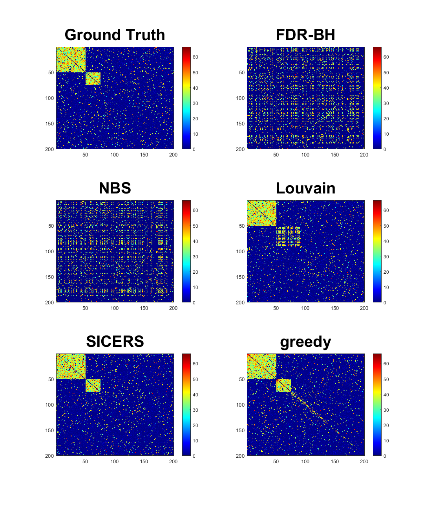

Contents
clc;clear;close all
cluster_size = [50 25];
mu1 = 1;
n = 120;
scenario = '2';
if scenario == '1'
sigma = 1/2;
d_in_ratio = 0;
d_out_ratio = 1;
bet_noise = 0;
p0 = [0 sigma];
elseif scenario == '2'
sigma = 1/1.2;
d_in_ratio = 0.05;
d_out_ratio = 0.95;
bet_noise = 0;
p0 = [0 sigma];
elseif scenario == '3'
sigma = 1/0.8;
d_in_ratio = 0.05;
d_out_ratio = 0.95;
bet_noise = 1;
p0 = [0 sigma];
end
initialization
show = 1;
parameters = struct('mu0', p0(1),'mu1', mu1, ...
'sigma0', p0(2), 'sigma1', sigma, 'cluster_size', cluster_size, 'num_clusters',length(cluster_size),'ctrl_num', n, 'case_num', n,...
'N', 200, 'd_in_ratio', d_in_ratio, 'd_out_ratio', d_out_ratio);
M = 10; SAVE = 0;
n_run = 10;
res_Louvain = {};
res_SICERS = {};
res_NBS = {};
res_greedy = {};
tic
for i = 1:n_run
disp(['running the ', num2str(i),'-th job'] )
test_summary1= test_summary_Louvain_NBS_SICERS(parameters, show, M, bet_noise);
res_Louvain{i} =test_summary1.Louvain;
res_NBS{i} =test_summary1.NBS;
res_SICERS{i} =test_summary1.SICERS;
res_greedy{i} =test_summary1.greedy;
res_FDRBH{i} =test_summary1.FDRBH;
end
toc
if SAVE == 1
FileName = ['cluster_size_',num2str(cluster_size),'samplesize_',num2str(n),'_scenario_',scenario,'_NBS','.mat'];
matfile = fullfile('data', FileName);
save(matfile, 'res_NBS');
FileName = ['cluster_size_',num2str(cluster_size),'samplesize_',num2str(n),'_scenario_',scenario,'_Louvain','.mat'];
matfile = fullfile('data', FileName);
save(matfile, 'res_Louvain');
FileName = ['cluster_size_',num2str(cluster_size),'samplesize_',num2str(n),'_scenario_',scenario,'_SICERS','.mat'];
matfile = fullfile('data', FileName);
save(matfile, 'res_SICERS');
FileName = ['cluster_size_',num2str(cluster_size),'samplesize_',num2str(n),'_scenario_',scenario,'_greedy','.mat'];
matfile = fullfile('data', FileName);
save(matfile, 'res_greedy');
FileName = ['cluster_size_',num2str(cluster_size),'samplesize_',num2str(n),'_scenario_',scenario,'_FDRBH','.mat'];
matfile = fullfile('data', FileName);
save(matfile, 'res_FDRBH');
end
running the 1-th job
running the 2-th job
running the 3-th job
running the 4-th job
running the 5-th job
running the 6-th job
running the 7-th job
running the 8-th job
running the 9-th job
running the 10-th job
Elapsed time is 67.603412 seconds.

load tests and calculation of the statistics
NBS
cluster1_power_NBS = [];
cluster2_power_NBS = [];
network_FDR_NBS = [];
edge_power_cluster1_NBS = [];
edge_power_cluster2_NBS = [];
edge_FDR_cluster1_NBS = [];
edge_FDR_cluster2_NBS = [];
for i = 1:length(res_NBS)
temp_struct = res_NBS{i}.inference_NBS;
cluster1_power_NBS = [cluster1_power_NBS; isfield(temp_struct,'cluster_1')];
cluster2_power_NBS = [cluster2_power_NBS; isfield(temp_struct,'cluster_2')];
network_FDR_NBS = [network_FDR_NBS; temp_struct.FP_ntwk/(temp_struct.FP_ntwk+temp_struct.TP_ntwk)];
if isfield(temp_struct,'cluster_1')
edge_power_cluster1_NBS = [edge_power_cluster1_NBS; temp_struct.cluster_1.TPR];
edge_FDR_cluster1_NBS = [edge_FDR_cluster1_NBS; temp_struct.cluster_1.FDR];
end
if isfield(temp_struct,'cluster_2')
edge_power_cluster2_NBS = [edge_power_cluster2_NBS; temp_struct.cluster_2.TPR];
edge_FDR_cluster2_NBS = [edge_FDR_cluster2_NBS; temp_struct.cluster_2.FDR];
end
end
for i = 1:length(res_NBS)
mean_cluster1_power_NBS = mean(cluster1_power_NBS);
sd_cluster1_power_NBS =std(cluster1_power_NBS);
mean_cluster2_power_NBS = mean(cluster2_power_NBS);
sd_cluster2_power_NBS =std(cluster2_power_NBS);
mean_network_FDR_NBS = mean(network_FDR_NBS );
sd_network_FDR_NBS = std(network_FDR_NBS);
mean_edge_power_cluster1_NBS = mean( edge_power_cluster1_NBS);
sd_edge_power_cluster1_NBS = std( edge_power_cluster1_NBS);
mean_edge_power_cluster2_NBS = mean( edge_power_cluster2_NBS);
sd_edge_power_cluster2_NBS = std( edge_power_cluster2_NBS);
mean_edge_FDR_cluster1_NBS = mean( edge_FDR_cluster1_NBS);
sd_edge_FDR_cluster1_NBS = std( edge_FDR_cluster1_NBS);
mean_edge_FDR_cluster2_NBS = mean( edge_FDR_cluster2_NBS);
sd_edge_FDR_cluster2_NBS = std( edge_FDR_cluster2_NBS);
end
Louvain
cluster1_power_Louvain = [];
cluster2_power_Louvain = [];
network_FDR_Louvain = [];
edge_power_cluster1_Louvain = [];
edge_power_cluster2_Louvain = [];
edge_FDR_cluster1_Louvain = [];
edge_FDR_cluster2_Louvain = [];
for i = 1:length(res_Louvain)
temp_struct = res_Louvain{i}.inference_Louvain;
cluster1_power_Louvain = [cluster1_power_Louvain; isfield(temp_struct,'cluster_1')];
cluster2_power_Louvain = [cluster2_power_Louvain; isfield(temp_struct,'cluster_2')];
network_FDR_Louvain = [network_FDR_Louvain; temp_struct.FP_ntwk/(temp_struct.FP_ntwk+temp_struct.TP_ntwk)];
if isfield(temp_struct,'cluster_1')
edge_power_cluster1_Louvain = [edge_power_cluster1_Louvain; temp_struct.cluster_1.TPR];
edge_FDR_cluster1_Louvain = [edge_FDR_cluster1_Louvain; temp_struct.cluster_1.FDR];
end
if isfield(temp_struct,'cluster_2')
edge_power_cluster2_Louvain = [edge_power_cluster2_Louvain; temp_struct.cluster_2.TPR];
edge_FDR_cluster2_Louvain = [edge_FDR_cluster2_Louvain; temp_struct.cluster_2.FDR];
end
end
for i = 1:length(res_Louvain)
mean_cluster1_power_Louvain = mean(cluster1_power_Louvain);
sd_cluster1_power_Louvain =std(cluster1_power_Louvain);
mean_cluster2_power_Louvain = mean(cluster2_power_Louvain);
sd_cluster2_power_Louvain =std(cluster2_power_Louvain);
mean_network_FDR_Louvain = mean(network_FDR_Louvain );
sd_network_FDR_Louvain = std(network_FDR_Louvain);
mean_edge_power_cluster1_Louvain = mean( edge_power_cluster1_Louvain);
sd_edge_power_cluster1_Louvain = std( edge_power_cluster1_Louvain);
mean_edge_power_cluster2_Louvain = mean( edge_power_cluster2_Louvain);
sd_edge_power_cluster2_Louvain = std( edge_power_cluster2_Louvain);
mean_edge_FDR_cluster1_Louvain = mean( edge_FDR_cluster1_Louvain );
sd_edge_FDR_cluster1_Louvain = std( edge_FDR_cluster1_Louvain );
mean_edge_FDR_cluster2_Louvain = mean( edge_FDR_cluster2_Louvain );
sd_edge_FDR_cluster2_Louvain = std( edge_FDR_cluster2_Louvain );
end
SICERS
cluster1_power_SICERS = [];
cluster2_power_SICERS = [];
network_FDR_SICERS = [];
edge_power_cluster1_SICERS = [];
edge_power_cluster2_SICERS = [];
edge_FDR_cluster1_SICERS = [];
edge_FDR_cluster2_SICERS = [];
for i = 1:length(res_SICERS)
temp_struct = res_SICERS{i}.inference_SICERS;
cluster1_power_SICERS = [cluster1_power_SICERS; isfield(temp_struct,'cluster_1')];
cluster2_power_SICERS = [cluster2_power_SICERS; isfield(temp_struct,'cluster_2')];
network_FDR_SICERS = [network_FDR_SICERS temp_struct.FP_ntwk/(temp_struct.FP_ntwk+temp_struct.TP_ntwk)];
if isfield(temp_struct,'cluster_1')
edge_power_cluster1_SICERS = [edge_power_cluster1_SICERS; temp_struct.cluster_1.TPR];
edge_FDR_cluster1_SICERS = [edge_FDR_cluster1_SICERS; temp_struct.cluster_1.FDR];
end
if isfield(temp_struct,'cluster_2')
edge_power_cluster2_SICERS = [edge_power_cluster2_SICERS; temp_struct.cluster_2.TPR];
edge_FDR_cluster2_SICERS = [edge_FDR_cluster2_SICERS; temp_struct.cluster_2.FDR];
end
end
for i = 1:length(res_SICERS)
mean_cluster1_power_SICERS = mean(cluster1_power_SICERS);
sd_cluster1_power_SICERS =std(cluster1_power_SICERS);
mean_cluster2_power_SICERS = mean(cluster2_power_SICERS);
sd_cluster2_power_SICERS =std(cluster2_power_SICERS);
mean_network_FDR_SICERS = mean(network_FDR_SICERS );
sd_network_FDR_SICERS = std(network_FDR_SICERS);
mean_edge_power_cluster1_SICERS = mean( edge_power_cluster1_SICERS);
sd_edge_power_cluster1_SICERS = std( edge_power_cluster1_SICERS);
mean_edge_power_cluster2_SICERS = mean( edge_power_cluster2_SICERS);
sd_edge_power_cluster2_SICERS = std( edge_power_cluster2_SICERS);
mean_edge_FDR_cluster1_SICERS = mean( edge_FDR_cluster1_SICERS );
sd_edge_FDR_cluster1_SICERS = std( edge_FDR_cluster1_SICERS );
mean_edge_FDR_cluster2_SICERS = mean( edge_FDR_cluster2_SICERS );
sd_edge_FDR_cluster2_SICERS = std( edge_FDR_cluster2_SICERS );
end
greedy
cluster1_power_greedy = [];
cluster2_power_greedy = [];
network_FDR_greedy = [];
edge_power_cluster1_greedy = [];
edge_power_cluster2_greedy = [];
edge_FDR_cluster1_greedy = [];
edge_FDR_cluster2_greedy = [];
for i = 1:length(res_greedy)
temp_struct = res_greedy{i}.inference_greedy;
cluster1_power_greedy = [cluster1_power_greedy; isfield(temp_struct,'cluster_1')];
cluster2_power_greedy = [cluster2_power_greedy; isfield(temp_struct,'cluster_2')];
network_FDR_greedy = [network_FDR_greedy; temp_struct.FP_ntwk/(temp_struct.FP_ntwk+temp_struct.TP_ntwk)];
if isfield(temp_struct,'cluster_1')
edge_power_cluster1_greedy = [edge_power_cluster1_greedy; temp_struct.cluster_1.TPR];
edge_FDR_cluster1_greedy = [edge_FDR_cluster1_greedy; temp_struct.cluster_1.FDR];
end
if isfield(temp_struct,'cluster_2')
edge_power_cluster2_greedy = [edge_power_cluster2_greedy; temp_struct.cluster_2.TPR];
edge_FDR_cluster2_greedy = [edge_FDR_cluster2_greedy; temp_struct.cluster_2.FDR];
end
end
for i = 1:length(res_greedy)
mean_cluster1_power_greedy = mean(cluster1_power_greedy);
sd_cluster1_power_greedy =std(cluster1_power_greedy);
mean_cluster2_power_greedy = mean(cluster2_power_greedy);
sd_cluster2_power_greedy =std(cluster2_power_greedy);
mean_network_FDR_greedy = mean(network_FDR_greedy );
sd_network_FDR_greedy = std(network_FDR_greedy);
mean_edge_power_cluster1_greedy = mean( edge_power_cluster1_greedy);
sd_edge_power_cluster1_greedy = std( edge_power_cluster1_greedy);
mean_edge_power_cluster2_greedy = mean( edge_power_cluster2_greedy);
sd_edge_power_cluster2_greedy = std( edge_power_cluster2_greedy);
mean_edge_FDR_cluster1_greedy = mean( edge_FDR_cluster1_greedy);
sd_edge_FDR_cluster1_greedy = std( edge_FDR_cluster1_greedy);
mean_edge_FDR_cluster2_greedy = mean( edge_FDR_cluster2_greedy);
sd_edge_FDR_cluster2_greedy = std( edge_FDR_cluster2_greedy);
end
FDRBH
edge_power_FDRBH = [];
edge_FDR_FDRBH = [];
for i = 1:length(res_greedy)
temp_struct = res_greedy{i}.inference_greedy;
edge_power_FDRBH = [edge_power_FDRBH; res_FDRBH{i}.power];
edge_FDR_FDRBH = [edge_FDR_FDRBH; res_FDRBH{i}.FDR];
end